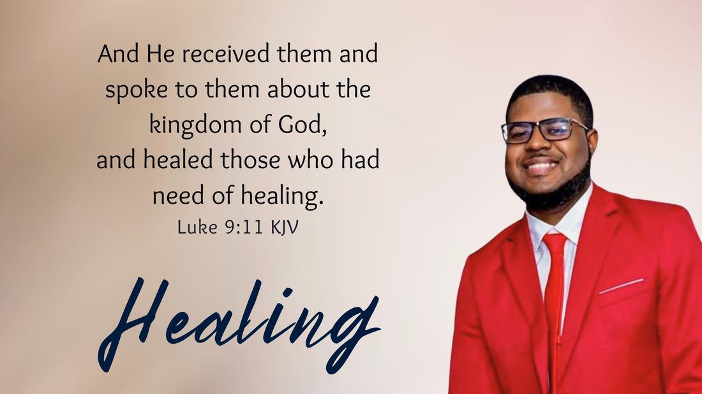
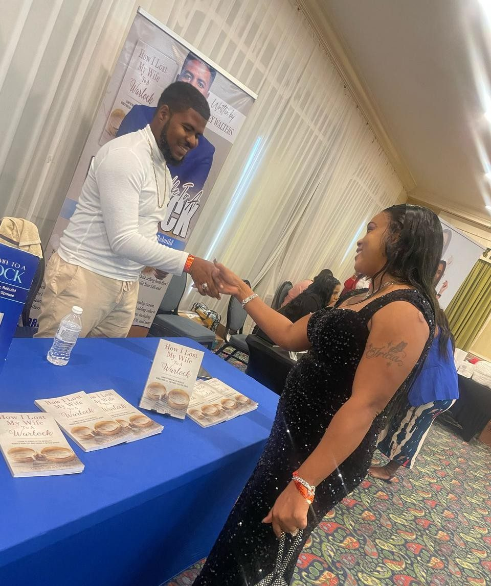
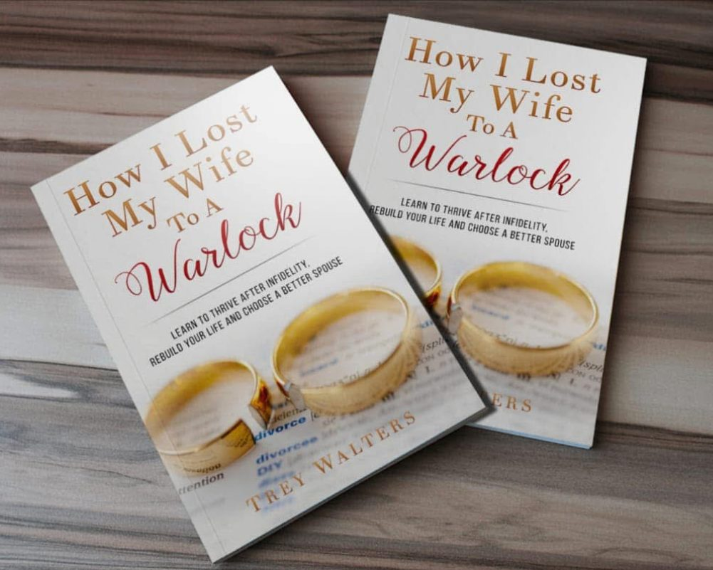
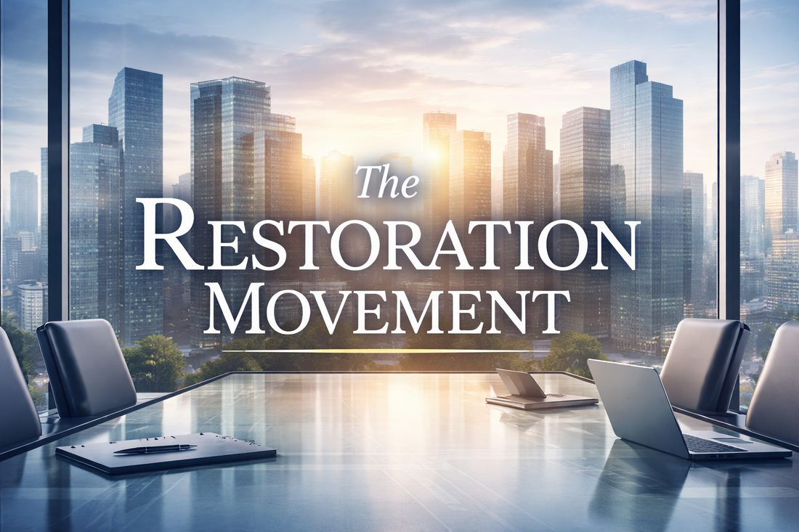

What We Offer at the Restoration Movement
The Restoration Movement exists to help people move from broken, stuck, or uncertain seasons into healing, clarity, and advancement.
Everything offered here is designed to support real transformation, not Surface motivation.

Mentoring
Mentoring provides wisdom, perspective, and guidance rooted in lived experience.
Through Mentoring you receive:
Insight from someone who has walked through betrayal, loss, rebuilding, and restoration
Personal and spiritual wisdom that helps you avoid unnecessary mistakes
Guidance rooted in faith, discernment, and practical understanding
Long-term perspective for growth, maturity and purpose
Mentoring is ideal for those who need direction, covering, and wisdom while navigating seasons of transition or rebuilding.

Coaching
Coaching focuses on clarity, action, and accountability.
Through coaching, you receive:
Help identifying what’s keeping you stuck
Clear goals and structured next steps
Accountability that keeps you moving forward
Tools to rebuild confidence, discipline, and consistency
Practical strategies for personal, relational, and spiritual growth
Coaching is ideal for those who are ready to do the work, take responsibility, and move forward intentionally.

Books & Learning Resources
The Restoration Movement also offers books and teaching resources designed to help you grow at your own pace.
These resources address:
Marriage restoration and relational health
Healing after betrayal and broken trust
Sexual discipline and personal integrity
Spiritual growth and maturity
Breaking cycles and getting unstuck
Each resource is built from experience, biblical truth, and practical application.

Community & Accountability
The Restoration Movement
This is a space where we walk through the process together, until healing comes, growth comes, recovery comes, and advancement follows.
You are not expected to rush transformation or walk alone.
Here, we stay connected through the journey.
Who This Is For
The Restoration Movement is for men and women who are ready to:
Heal honestly and intentionally
Grow in faith, discipline, clarity, and strength
Rebuild their lives, relationships, and identity
Move forward with purpose, clarity and direction
Ready to Take the Next Step?
If you’re ready for healing, clarity, and intentional growth, I’d love to connect with you.